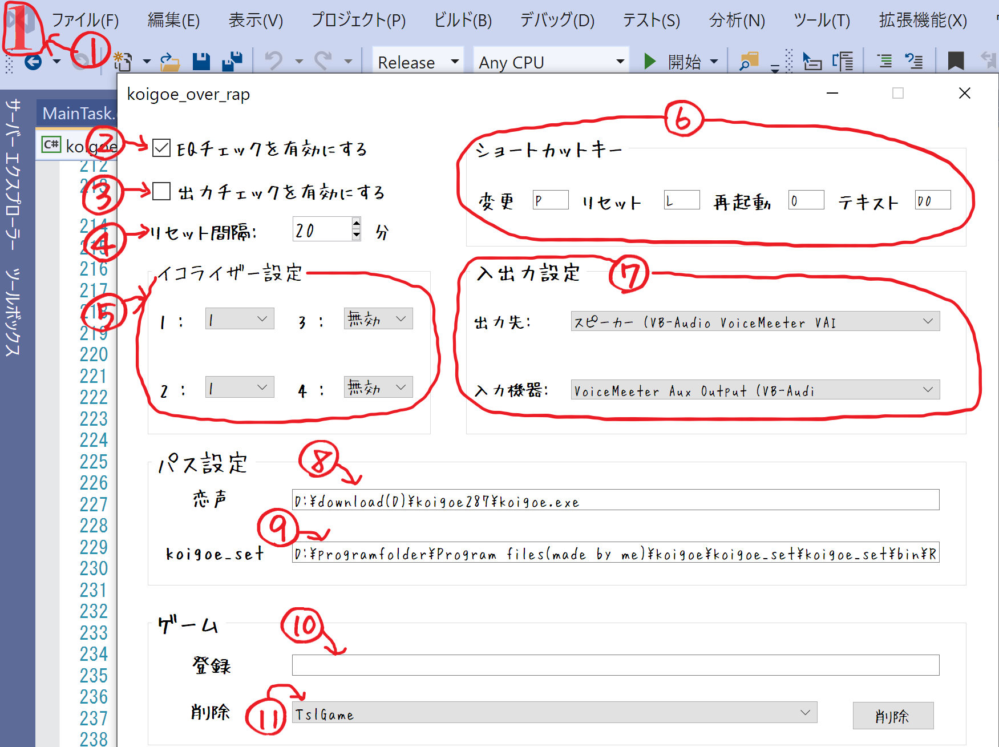

概要
このソフトは、恋声の簡略化、自動化、機能追加を行うソフトです。原理としては、このソフトから恋声に命令を出しているという感じです。
主な機能
- 起動時、恋声を自動的にセッティング
- 入出力設定の文字列が恋声より長く保存できるので必ず自動設定できる
- ショートカットキーを設定し、声のセット・イコライザー変更。リセット・再起動
- 恋声が落ちた際に自動復帰
- 一定時間で恋声をリセット（不安定化防止）
- 音の出力を監視。出力が壊れた際恋声の再起動
- オーバーレイで現在の声のセット表示
中身
- koigoe_over_rap.exe ・・・ 本体。typoしてごめんなさい。
- koigoe_set.exe ・・・ サブモジュール。単体では意味ない。
- Readme ・・・ 使い方とか入ってる。
- Font ・・・ このアプリで使ってるフォントが入ってる。
使い方
- 恋声を起動
- koigoe over rapを起動（初回のみ警告が出ますが後で設定します）
- 画面のものを自由に設定（それぞれについては各部説明にて説明）
- 完了
注意
- フォントをインストール（任意）
- 恋声が起動していないとそもそも立ち上がりません。
- ショートカットキーが発動するタイミングはキーを放した瞬間です。
- koigoe_over_rapを起動する前に恋声のイコライザーのオン・オフを操作すると、ずれます。
各部説明
画面のスクショ・各設定項目がある設定ファイル名を青色で表示します。

- オーバーレイで表示される部分。現在の恋声のセットが表示。赤のときショートカット有効。青のときショートカット無効。
- このアプリを使っていると、時々バグがおき、おかしな音が出力されます。ここにチェックを入れると、そのバグを検知し再起動してくれます。
Output_check.ini（1行目）
- ここにチェックを入れると、恋声から音声が出力されていないときに警告を出してくれます。ホワイトノイズを除去していて、何もしゃべらないと反応するときがあるので注意。
Output_check.ini（2行目）
- 恋声をリセットする間隔。長時間恋声を稼働させると不安定になる対策。0の場合リセットしない。
reset_interval.ini
- 恋声の声のセットとイコライザーのセットの対応。固定の数字は声のセット。無効、1～4の選択
eq_set.ini
- ショートカットキーの割り当て。文字をクリックし、設定するキーを押すことによって変更。複数キーの組み合わせ不可。
Shortcat_keys.ini
- 変更 ・・・ 次の声のセットに変更。1→2→3→4→1…
- リセット ・・・ 声の変換をリセット。出力が不安定になった時用。
- 再起動 ・・・ 恋声を再起動。恋声がおかしくなった時用。
- テキスト ・・・ テキストモード切り替え。テキストモード時はこのショートカット以外は効かない・オーバーレイ青になる。
- 入力・出力はどうするかという設定。
- 出力先 ・・・ 恋声はどのスピーカーに出力するか。
output_dev_num.ini
- 入力機器 ・・・ このアプリへはどのマイクから入力するか。出力のチェックに使用。
OutputDevice.ini
- 恋声はどこにあるかということ。ドラッグ&ドロップで設定可能。
path.ini(1行目)
- koigoe_set.exe はどこにあるかということ。ドラッグ&ドロップで設定可能。
path.ini(2行目)
- ゲームとして記憶する実行ファイルの入力欄。ここでゲームと記憶されると、オーバーレイがゲーム中も表示されるかもしれない。ドラッグ&ドロップで入力可。文字を入れた後、Enter を押すと登録。
GameProcess.ini
- ゲームとして記憶したものの解除。左のところで選び、右の削除ボタンで解除。
GameProcess.ini